Turning a fragmented model handoff into one continuous workflow.
Details
Role: Sole UX lead
Product: AI/ML model-as-a-service platform
Partners: Product, engineering, data science & domain experts
Scope: Workflow architecture, interaction design, testing & QA
Overview
BRYX is a browser-based machine-learning platform developed by KCI Technologies for engineering professionals. RoboClean removes noise from point cloud scans; RoboFlat uses cleaned point clouds to analyze concrete floor flatness.

Problem
One task. Two models. Too much work between them.
These models represented consecutive steps in one engineering task, but the interface treated them as separate destinations. Users had to move files between the two before they could continue their work.
Before / Manual handoff
A separate data-management task
- Locate and download the RoboClean output.
- Leave the model workflow and open dataset management.
- Upload the RoboClean output as a new dataset.
- Return to RoboFlat and locate the new RoboClean dataset.
- Select the dataset and complete validation.
After / Integrated handoff
Continue inside RoboFlat
- Start the RoboFlat run.
- Select an eligible RoboClean output alongside the other data options.
- Review dataset-creation feedback and complete validation.
BRYX creates the required dataset in the background and makes its storage consequence visible.
Solution
Translate the system requirement into a usable interface.
As the sole UX designer, I owned the workflow structure, component behavior, responsive states, system messaging, prototypes, usability-test updates, and implementation QA.
Challenge
Shorten the path. Keep the consequences clear.
The user’s intent was simple: use a cleaned output in the next model run. Three system constraints shaped the design.
- Product & domain experts
- Requirements, priorities, and operational rules.
- Engineering & data science
- Dataset creation, storage behavior, and implementation.
- My role
- Interaction model, interface hierarchy, states, and validation.
- Create a dataset
- RoboFlat could not consume the output until BRYX converted it into a platform dataset.
- Respect account storage
- The new dataset counted against the user’s available data allocation.
- Fit a dense workflow
- Run setup already had vertically stacked content and distant navigation controls.
Design decision / Data selection
Put the integration where the next decision happens.
Users needed RoboClean outputs to become a data option inside RoboFlat. Placing the integration at data selection connected the two models at the moment it mattered.
{kind=link}
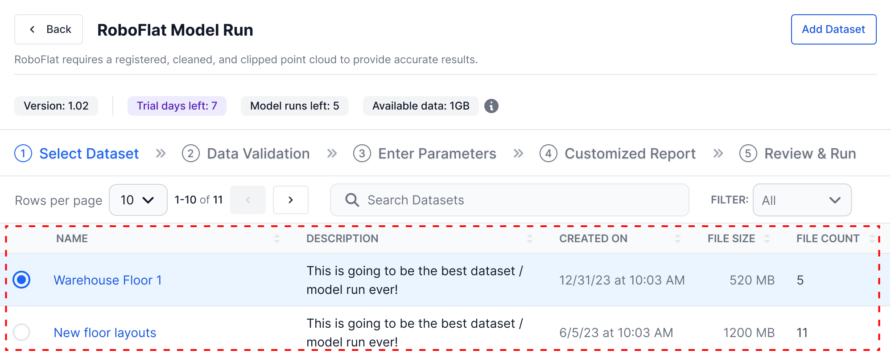
{kind=link}
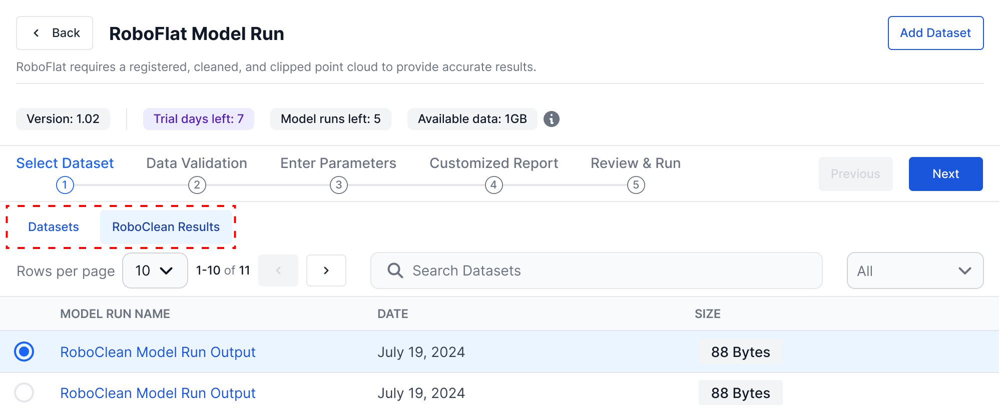
Design decision / System feedback
Make the invisible system action understandable.
The shortcut still created a dataset and consumed storage. The interface needed to explain that behavior and provide a recovery path when capacity was unavailable.
Capacity available: inform, then allow progress.
{kind=link}
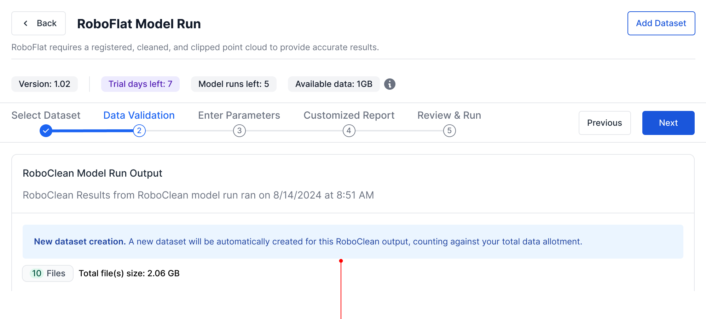
Capacity insufficient: block, then offer recovery.
{kind=link}
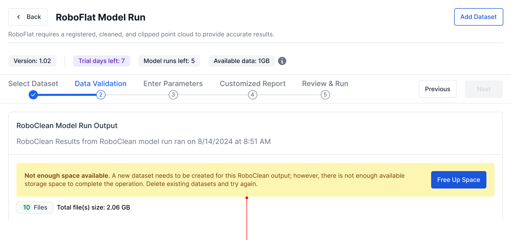
Design decision / Responsive navigation
Keep progress and navigation in the same field of view.
The integration added pressure to a dense model-run step. I explored ways to consolidate navigation while preserving room for data, parameters, and validation feedback.
{kind=link}
{kind=link}
V3 / Selected direction
A responsive, consolidated pattern
Desktop keeps the workflow overview and navigation together. Narrow screens prioritize the current step, the next action, and enough context to keep users oriented.
V3 / Desktop
List component replaced table rows
Converting the Datasets and RoboClean Results tables to lists made the info more scannable and mobile friendly.
{kind=link}
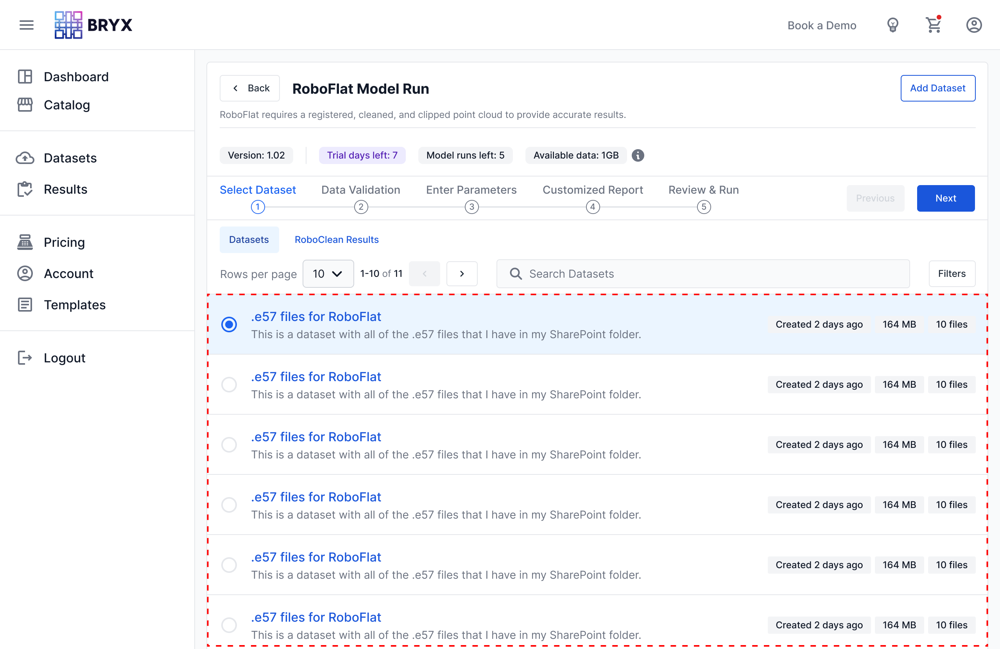
{kind=link}
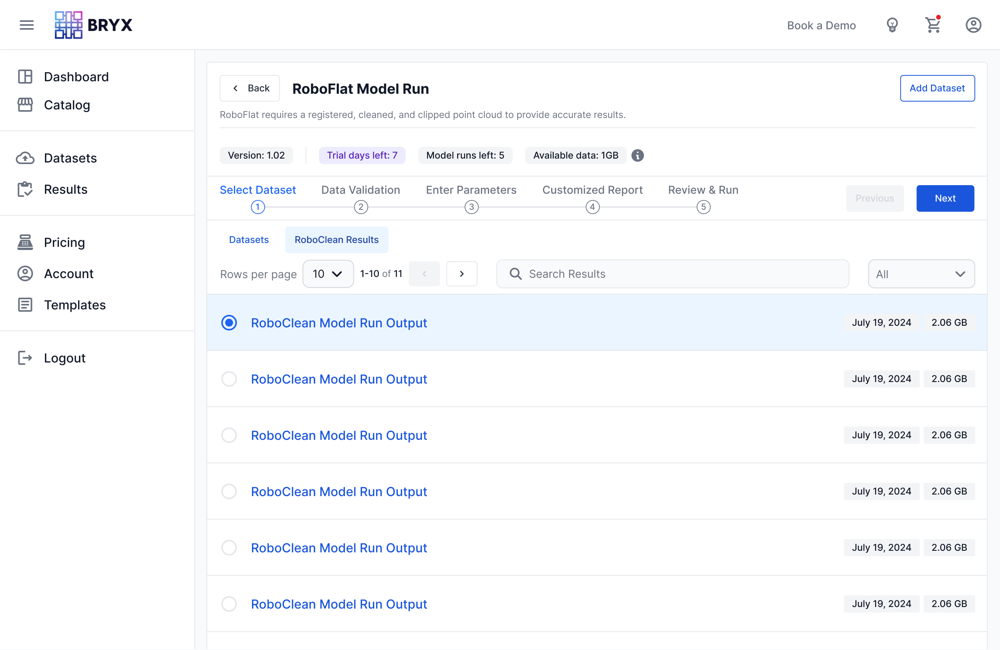
V3 / mobile
Optimized for small screen size
Prioritizing the current step’s actions helped to determine what information remained prominent on small screens.
{kind=link}
Annotations
- Model details hidden behind a tooltip.
- “Add Dataset” button label reduced to a plus icon.
- Metadata badges scroll horizontally.
- Progress indicator replaces numbered steps.
- “Previous” and “Next” button labels reduced to left and right chevron icons.
- List item details stacked vertically.
- Selection radio moved to the right side for improved right thumb access.
Framework
A reusable framework for the next model.
RoboFlat shared a recognizable operating structure with other BRYX models while retaining its own configuration and validation needs. The integration became part of a broader model-run framework.
RoboClean, RoboFlat, and other BRYX models connect to a common model-run sequence. From the start of a model workflow, the stages are Dataset selection, Validation, Configuration, Model run, and Output and reuse, ending in a Reusable model result. Dashed callouts identify the shared stages: Dataset selection provides a consistent entry point; Validation provides system and capacity feedback; Model run provides progress and execution; and Output and reuse supports reviewing, saving, or reusing output. Configuration is marked model-specific, with unique controls within the shared frame.
{kind=link}
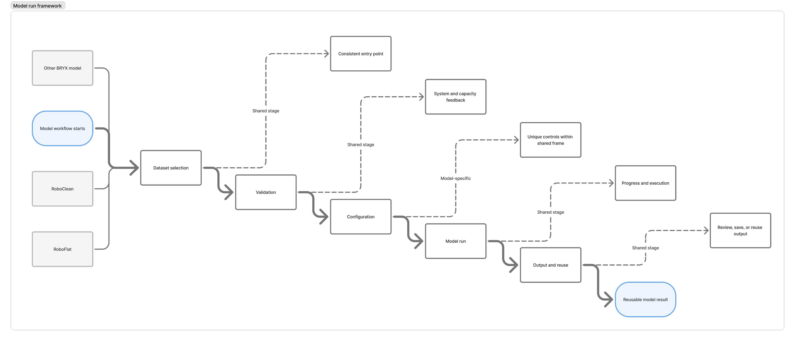
{kind=link}
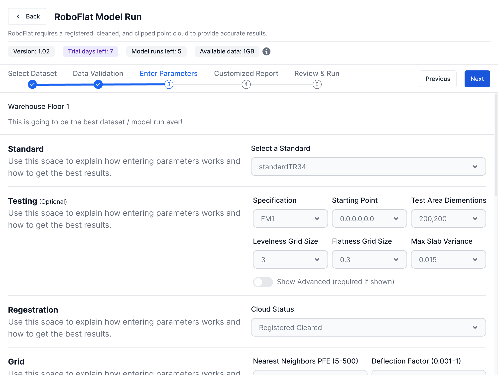
{kind=link}
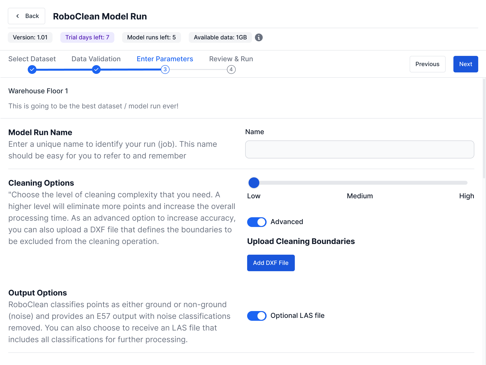
Usability validation
Follow-up testing showed that the integration was easier to find and complete.
In a follow-up usability test with five participants, users reached the integration through RoboFlat and completed the workflow in fewer steps than the previous manual handoff.
{kind=link}
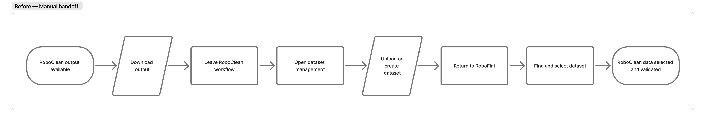
{kind=link}
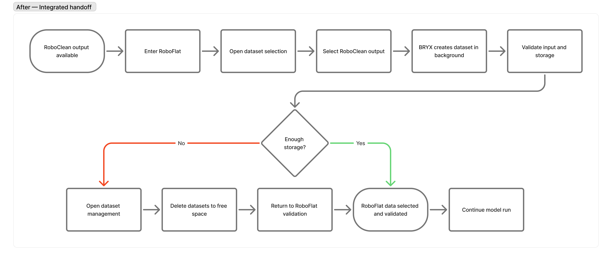
Observed change
The handoff became part of the model workflow instead of a separate data-management task.
Implementation & QA
The design work continued into implementation.
I reviewed the implemented experience in the test environment and documented discrepancies through Figma comments and the team’s QA workflow. Working with product and engineering, I carried the interaction details through review, correction, and verification. This loop connected the design intent to the implemented experience.
Outcome & reflection
A shorter workflow that still told users what the system was doing.
The tested experience connected RoboClean and RoboFlat at data selection, made dataset creation and storage consequences visible, and improved navigation through a dense model-run workflow.
Complex product design is often about deciding when users need to understand the system’s rules. Here, the right answer was to hide the manual handoff while making its consequences clear.